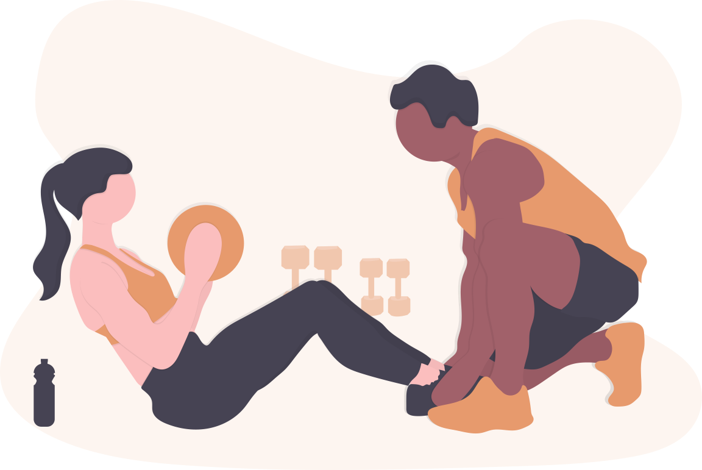

I have really enjoyed starting personal training with Ellaine. She is extremely knowledgeable, professional and very approachable. She has listened to my goals and motivated me at all times.
She provides a great balance of cardiovascular and strengthening exercise and I really enjoy our session both for the exercise content and personal approach.
Let's get you back on track.
I provide remedial massage therapy for sporting and active lifestyle injuries to reduce pain and promote healing. FIND OUT MORE
Do you suffer from aches & strains?

Sports therapy treatment can help.
For treatment of sport injuries, ligament sprains, joint pain, muscle Strains back and neck pain.About Me
Hi, firstly, thank you for visiting my website.
Now allow me to introduce myself, I began my career in health fitness wellbeing and physical therapy in 2002 where after 10 years in the body building industry, first as a personal fitness regime for myself, then as a competitor in local natural bodybuilding competitions where after a few years the industry began to change and leaned more toward fitness. I then went on to obtain a qualification in YMCA exercise to music level III. I went on to teach fitness classes locally in community halls and parks in the summer months.
An opportunity of a lifetime came along after four years in the fitness industry and I made a career change with spanned 10 years. During this time I continued to study and expand my knowledge of the human anatomy to became a qualified Sports Rehabilitation Therapist specialising in soft tissue manipulation and also and I also taught classes as an unarmed defence instructor fitness instructor skill I had already acquired in order to supplement my studies.
After 10 years I slowly drifted back into the field of fitness and physical therapy, which brings me to where I am today. I presently work at an established non profit making Health club where I am a Wellbeing advisor and PT and In my own time I conduct sport therapy sessions on the premises for patrons of the club as well as my own clientele portfolio.
I thoroughly enjoy what I do. I always have a satisfying day when I treat clients who come to me with sometimes chronic injuries and go away with restored mobility and pain free.
I have always been fascinated by how the human body works what it does and its capabilities. We are all unique and I truly believe the body is a temple. Take care of it and it will do the same for you.
Remedial therapy service in your home.
How can working with me, help you?
As a sport remedial therapist I see myself as a movement expert. I assist with optimising quality of life through prescribed exercise, pain management, hands-on-care, and client education. Take a look yourself at some of the many benefits of physical therapy.Avoid Surgery
Some problems don’t necessarily need to lead to surgery - they can be solved with physical therapy in your home.Improved Balance
By working on your core muscles, your balance can return to normal quickly.Improved Mobility & Movement
Many of my clients have seen improvement to their mobility & movement within just a couple of weeks.Recovery from Injury or Trauma
Get back on your feet quicker than you would by just resting!Pain Management
If you can manage your pain naturally, you can reduce the need for medication such as opioids.Recovery from Stroke
Studies show that physical therapy is extremely beneficial for patients recovering from a stroke.
As a sports remedial therapist, I do not diagnose but I will refer should I see the need to. As a part of my services, I create personalised treatment plans that help clients improve mobility, manage chronic conditions, recover from injury, and prevent future injury and chronic disease.
"To keep the body in good health is a duty… otherwise we shall not be able to keep our mind strong and clear."
Nutritional Advice
As a nutritional advisor I take a holistic approach to providing advice on nutrition and the effects it may have on an individual. I help clients alter their eating habits and live healthy lifestyles.
I can assist with nutritional balance, weight loss, digestion of food, and discuss food allergies and the best way to combat cravings.
Personal Training
As a Personal Trainer I possess the skills, knowledge and abilities necessary to design safe yet effective fitness programs for individuals. Through personal instruction I help clients in reaching their personal health and fitness goals.
Testimonials
The thought of sports massage was worse that the reality. I presumed Ellaine was going to apply much more pressure the second time around for my treatment sessions. But to my surprise if found I was perfectly able to cope with it with a bit of controlled breathing and it’s so worth it, my legs are feeling so much looser and lighter.
Ellaine is a very pleasant and friendly lady and I have found her to be very knowledgeable and through in her treatment. I feel that the treatment helped with my neck problem. Would definitely recommend.